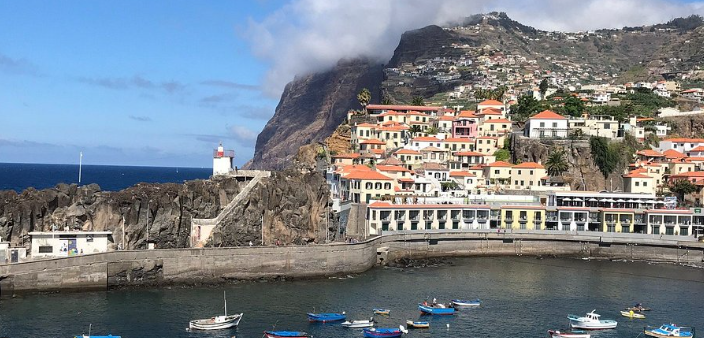
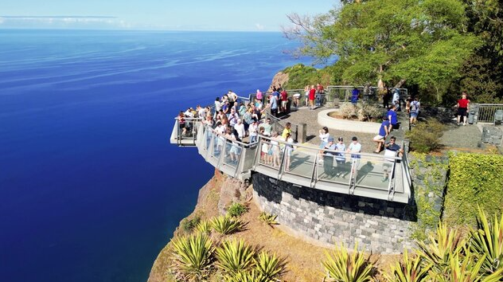

✨ Cámara de lobos ✨
Viaje a Madeira 🚀


Características:
- Câmara de Lobos fue uno de los primeros lugares poblados en Madeira después de su descubrimiento
- Su nombre proviene de los lobos marinos que solían habitar la zona
- Es un importante puerto pesquero y turístico
- Aquí se encuentra Cabo Girão, uno de los acantilados más altos de Europa con su famosa plataforma de vidrio